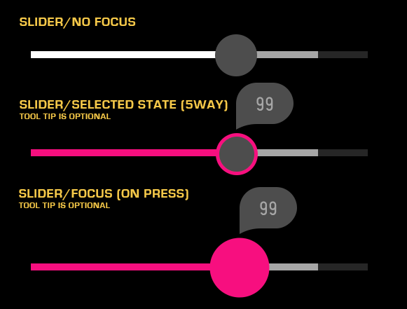

Slider
About
A Slider is a control for setting a value along a defined range. It is commonly used for adjusting system settings such as contrast and brightness.
API Reference
Behavior and States
Behavior
A Slider consists of a Bar (whose ends represent the Slider’s upper and lower limits), the Current Value, and the Selector. There is also an optional Buffering bar that may be used, if needed.
The value of the Slider may be changed using either the Magic Remote or 5-way navigation. Using the Magic Remote, press and hold Select while moving the remote. Releasing the Select button returns the Slider to its normal state. Using 5-way, first press Select, then use the arrow buttons to move the Selector. To exit active state, press Select again.
There are several options that may be configured to customize the Slider and its behavior. These include the following:
Lock Bar
When disabled, Lock Bar prevents the Current Value from changing in response to selector movement.
Constrain
When enabled, Constrain will prevent the Current Value and Selector from going past the Buffering position.
Tool Tip
The Tool Tip is used to display either a value or a percentage when the Selector is moved.
Tappable
When Tappable is enabled, users with a remote may point at a location on the slider and press Select to change the value.
Animation
Animation works in conjunction with Tappable. With Tappable enabled, after tapping on the slider, the Selector will either slide to the new location if animation is enabled), or jump to the location (if animation is disabled).
States
Normal (up/unpressed)
The Slider is available for use and is not selected.
Focus (hover)
The Slider current has focus from the remote and is ready to be selected.
Active (down/pressed)
The Slider has been selected and the value may be changed.
Deactivated (disabled)
The Slider cannot be selected or changed.
Sizing
The Bar dictates the overall width of the control; it has a default width of 300 pixels. While this width is configurable by the developer, the height is not. The Current Value may not exceed the limits from the Bar, but may be constrained due to the Lock Bar or Constrain properties. In addition, the Buffering bar’s width may not exceed that of the Bar, but is otherwise not constrained.
Illustration
